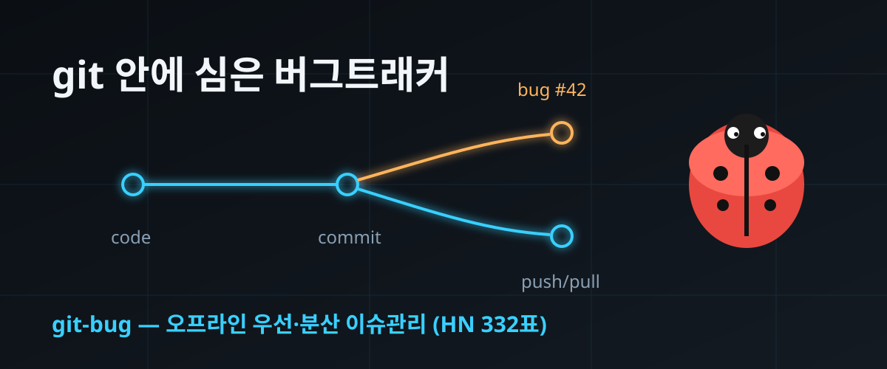

git-bug — "이슈 추적기에 git이 왜 필요해?"에 7년 만에 나온 답 (HackerNews 332표)

결론부터: 코드 저장소 하나로 이슈까지 같이 굴리는 도구 git-bug가 화제다. 버그 리포트를 파일이 아닌 git 내부 객체로 저장해서, 코드처럼 push하고 pull해 이슈를 동기화한다. 인터넷이 안 되면 오프라인으로 쓰고, 나중에 이어서 밀면 된다.
HackerNews에는 2026년 9월 25일 올라와 332표를 받았고, 2018년 시작된 프로젝트가 최근까지 커밋이 이어지며 스타 1만 개를 넘겼다 (2026-09-26 GitHub API 직접 조회: 스타 10,511·포크 329).
"Jira가 느리다"는 불평이 아니라, 이슈 데이터의 소유권을 코드와 한곳에 두면 무엇이 바뀌는가를 7년째 실험 중인 사례다.
30초 요약
| 항목 | 내용 |
|---|---|
| 무슨 일 | git 저장소 안에 내장되는 분산·오프라인 우선 버그트래커 git-bug가 HackerNews에 재조명 (2026-09-25, 332표) |
| 핵심 구조 | 이슈·댓글·사용자 정보를 프로젝트 파일이 아닌 git 내부 객체로 저장 — 워킹 트리는 그대로 |
| 동기화 | 코드와 같은 git 리모트에 git bug push/pull로 이슈를 올리고 받음. 별도 서버가 필요 없다 |
| 접구 | CLI·터미널 UI(termui)·웹 UI 세 가지. 웹 UI는 저장소 코드 브라우징까지 겸함. GraphQL API로 외부 도구 연동 |
| 연결고리 | GitHub·GitLab 등 기존 트래커와 양방향 브리지 — 로컬 작업용으로 병행 사용 가능 |
| 규모·라이선스 | Go 언어, GPL-3.0, 2018-07-12 시작, 최종 릴리스 v0.11.0 (2026-09-22), 마지막 푸시 2026-09-25 (GitHub API 실측) |
1. 무엇이 화제가 됐나
git-bug의 존재 이유는 한 문장으로 줄인다. 이슈 추적기를 따로 띄우지 말 것. 저장소가 이미 있는데 왜 서버를 하나 더 올리나,라는 물음에서 출발한 도구다. 버그 하나를 등록하면 그 내용이 커밋·트리와 같은 git 저장소 안의 객체로 들어간다. 워드프레스 게시물처럼 데이터베이스가 필요한 게 아니라, 코드 이력과 같은 서랍에 함께 보관된다.
사용 흐름은 git을 쓰던 손 그대로다. git bug user create로 신원을 만들고 git bug add로 이슈를 띄우면 편집기가 열려 제목과 본문을 쓴다. git bug ls "status:open sort:edit"처럼 쿼리로 목록을 뽑고, show·comment·close로 상태를 옮긴다. 화면이 필요하면 git bug termui로 터미널 창을, git bug webui로 브라우저 창을 띄운다.
이번 HN 글의 댓글창에서는 제작자(마이클 뮈레)가 직접 roadmap을공개했다. 웹 UI에 GitHub OAuth 같은 외부 인증을 붙여 외부인이 편집 가능한 공개 포털로 만드는 일, 이슈뿐 아니라 풀 리퀘스트까지 다루기 위해 git bug pr 계열 명령 공간을 비쳐두는 일이 1순위로 적혔다. 2026년 9월 22일 나온 v0.11.0이 최신 릴리스다.
2. 왜 심상치 않은가
① 오프라인이 기본값인 유일한 이슈 트래커 계열
오프라인 상태에서 언제든 이슈를 읽고 쓰고 첨부할 수 있다. 연결이 돌아오면 push 한 번으로 합류한다. 웹 트래커에서 "로딩 중" 스피너를 보던 습관이 통째로 사라지는 구조다. 목록과 검색은 밀리초 단위라는 게 제작진의 설명이다.
② 벤더 잠금이 원천 차단된다
쓰던 서비스가 요금을 올리든 서비스를 접든, 이슈 이력은 이미 로컬 저장소와 함께 통째 백업으로 남아 있다. 별도의 내보내기 절차를 걱정할 필요가 없다 — 리모트 하나 추가하는 게 곧 이사다. 서비스와 함께 데이터가 사라지는 게 기본인 유료 트래커 시장에서 정반대 계약을 제시한 셈이다.
③ 커널 커뮤니티가 실제로 손대기 시작했다
댓글창에는 리눅스 재단 IT 출신 인사가 커널 패치 워크플로 도구 b4와 cgit 환경에 이 도구를 얹는 시연을 최근 컨퍼런스에서 했다는 목격담이 달렸다. b4 공식 문서에 연동 안내가 실려 있다는 점까지 확인됐다. 30년 지기 Bugzilla·Jira 곁에 실험실이 아닌 실무 후보로 이름이 오르기 시작했다는 뜻이다.
④ CRDT로 합치는 이슈 병합
같은 이슈를 두 사람이 오프라인에서 고치면? git-bug는 코드처럼 충돌 마커를 던지는 대신 CRDT(여러 편집을 자동으로 합치도록 설계된 데이터 구조)로 두 편집을 통합한다. 제작자가 직접 HN에서 확인한 설계 선택이고, 충돌 해결을 git 방식 대신 별도 구조로 바꾼 과감한 선택이라는 평가가 붙었다. 같은 버그를 두 사람이 각각 등록하면? 제목이 같아도 별개 이슈로 남고, 누가 알아보고 중복을 닫으면 된다 — 동기화 주기가 짧을수록 드문 일이라고 제작진은 답했다.
3. 바로 써먹기 — 로컬 저장소에 5분 설치
| 단계 | 명령·설정 | 포인트 |
|---|---|---|
| 설치 | brew install git-bug (또는 각 OS 패키지·GitHub 릴리스 바이너리 v0.11.0) | 단일 바이너리라 런타임 의존성이 없다 |
| 신원 등록 | git bug user create | git 설정과 별개로 이슈용 사용자 ID를 발급 (서명 구조) |
| 이슈 등록 | git bug add | 에디터가 열리고, 제목·본문·첨부까지 git 객체로 들어간다 |
| 동기화 | git bug push / git bug pull | 코드와 같은 리모트 사용. 권한·브랜치 전략 그대로 재사용 |
| 조회·검색 | git bug ls "status:open tag:regression" / git bug ls "oom kill" | 상태·라벨·텍스트 검색을 CLI에서. jq 친화적 스크립팅 가능 |
| GUI 필요할 때 | git bug webui | 이슈 관리 + 저장소 코드 브라우징(파일 트리·diff) 겸용 |
이미 GitHub 이슈를 쓰는 팀이라면 브리지를 권한다. git bug bridge pull/push로 GitHub 이슈를 로컬로 받아 터미널에서 읽고 회수해 답글을 달 수 있다 — 웹 트래커를 버리지 않고 키보드 작업량을 줄이는 중간 경로다.
정리하면, 혼자 하거나 2~3인 팀이라면 별도 서비스에 가입해 익히는 비용보다 git 명령 한두 개를 더 외우는 편이 확실히 싸다.
4. 해외 반응 쟁점 (달린 댓글 28개)
① "이걸 왜 이제야" vs "10년 전에도 있었다". 탄성 섞인 환영과 함께 fossil-scm 등 선행 사례가 소환됐고, "10여 년 전에도 유사 프로젝트 붐이 있었다가 시들었다"는 회고와 2015년 정세 정리 블로그(결론은 '다들 영리하게 작동하지 않았다')까지 링크됐다. 제작자가 HN에서 "관심이 생기면 풀타임 전환을 고려하겠다, 후원 아이디어를 달라"고 밝히자 "Jira 싫어하는 사람 1인당 1달러씩만"이라는 응원이 달렸다.
② 최대 반론: "티켓은 문외한도 봐야 하는데". "모든 직급이 이슈를 읽고 편집한다. 접근 장벽이 있는 순간 티케팅은 죽는다"는 비판이 상위에 올랐다. git을 모르는 기획자·CS 담당자에게 clone을 시킬 수는 없다. 제작자는 "웹 UI에 OAuth를 붙이면 일반 트래커 경험을 제공하면서도 git 워크플로의 이점은 남는다"고 답했지만, 그 웹 포털이 아직 미완이라는 점이 솔직히 적시돼 있다. 데모용·소수 전문가용과 전사 공통 트래커는 별개 문제라는 게 스레드의 중론이었다.
③ "ssh-agent 없이 push가 안 되는" 실전 결함. 몇 달 전 실제 도입을 시도한 사용자가 순수 git 경로에서 ssh 에이전트를 요구하는 결함(issue #1023)이 도입을 막았다고 지적했고, 제작자는 자체 구현(go-git)의 신뢰성 한계를 인정하며 git 바이너리를 쓰는 옵션을 붙이겠다고 답했다. 데모와 실전의 거리가 댓글창에 그대로 드러난 스레드였다.
④ 형제 프로젝트들의 향연. 댓글 절반 가까이가 유사 프로젝트 소개였다: git 객체로 코드 리뷰를 추적하는 git-appraise, 사람이 읽는 평문 티켓 파일을 쓰는 ticket, 마크다운 편집기를 원해 직접 만들었다는 사용자, Dolt DB로 git에 데이터를 넣는 beads 등. "분산 트래커"는 혼자 등장한 게 아니라 작은 조류가 되어 있었고, HN은 그 조류의 현재 위치를 표시하는 좌표계 노릇을 했다.
⑤ "버그라는 단어가 족쇄" 논쟁. "git bug feature은 있는데 git bug bug은 추하다"는 제작자 본인의 이름 고민에, "버그존(Bugzilla)은 30년간 'bug'로 기능 요청을 관리해왔다", "없는 기능은 곧 버그이며 사실상 서비스 거부, CVE를 부여해야 한다"는 농담이 이어졌다. 호칭 논쟁은 늘 그렇듯 제품 논의의 절반이었다.
⑥ "git은 과거인가 미래인가". "향후의 버그 리포팅은 git 안인가, 밖인가. git 자체는 미래 기술인가 과거 기술인가"라는 짧은 반문이 달렸다. 20년 넘은 포맷 위에 2020년대 워크플로를 얹는 게 정답인지에 대한 근본 질문으로, 이 스레드가 단순 도구 소개를 넘어선 지점이다.
5. 마시기 전 주의
- 비개발자까지 쓰는 사내 공통 트래커로는 아직 부적합하다 — 웹 포털의 외부 인증·편집 기능은 로드맵 단계다 (제작자 본인 확인).
- 이슈 객체가 git 내부에 있는 만큼 저장소 클론 권한이 곧 이슈 열람 권한이다. 기밀 이슈와 코드 저장소를 분리해야 하는 조직에선 구조적으로 맞지 않는다.
- 순수 git 경로 불일치(issue #1023)처럼 ssh 에이전트를 요구하는 실행 환경 결함이 보고돼 있다. 사내 스크립트에 얹기 전 파일럿 저장소 한 곳으로 검증하자.
- GitHub의 라벨 자동화·PR 연동·감사 로그 같은 운영 기능은 대체되지 않는다. 브리지는 양방향 동기화이지 기능 이식이 아니다.
- GPL-3.0 라이선스다. 도구를 그대로 쓰는 건 무방하지만, 파생 서비스를 염두에 둔다면 라이선스 조건을 먼저 확인해야 한다.
바로 가기
- git-bug 저장소 — README·설치 가이드·v0.11.0 릴리스
- HackerNews 댓글창 — 제작자 roadmap 공개 현장 (332표)
- b4 문서 — 커널 워크플로 도구의 git-bug 연동 안내
F-Droid 2.0 — 유통 주권을 지키는 10년 만의 개편 — 남의 서버에 내 것을 맡기지 않는 흐름의 다른 축. 이번엔 앱 장터, 이번 잔은 이슈 데이터.
개발툴 시리즈 — 해외 개발자 커뮤니티에서 먼저 검증된 도구만 골라 한계까지.
도구 코너 — 로컬 개발 워크플로 체크리스트 (준비 중).